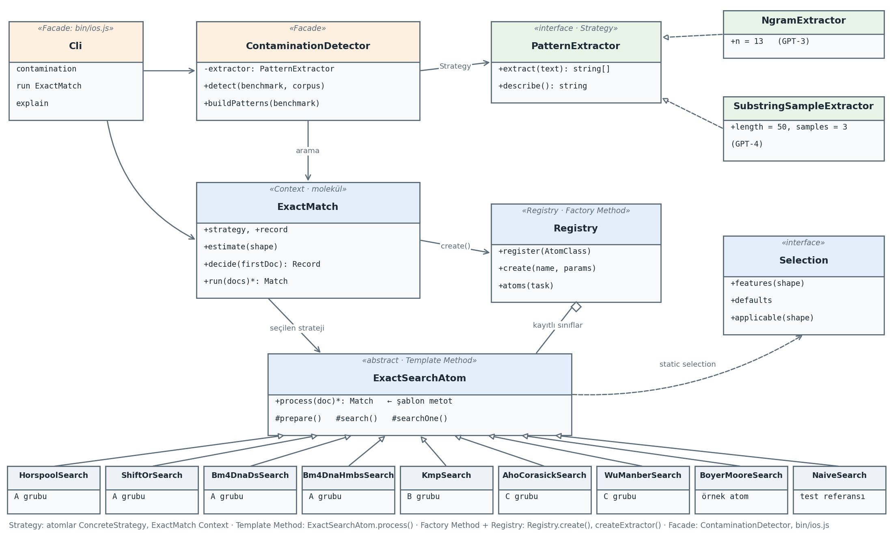

Problem. Bir dil modelinin test puanı, test soruları eğitim verisine sızmışsa (benchmark contamination) gerçek yeteneği değil ezberi ölçer. GPT-3 raporu (Brown ve ark. 2020) test örneklerinin 13 kelimelik parçalarını (13-gram), GPT-4 raporu (OpenAI 2023) her örnekten rastgele seçilmiş üç tane 50 karakterlik parçayı eğitim verisinde birebir arayarak kirlenmeyi ölçtü. Bu arama bir tam desen eşleştirme işidir: binlerce desen, milyonlarca karakterlik bir korpusta, örtüşenler dahil bütün konumlarıyla bulunmalıdır. Bu işi yapan çok sayıda algoritma var ve hiçbiri her durumda en hızlısı değil: tek uzun desende atlamalı Boyer-Moore ailesi, kısa desende bit paralel Shift-Or, çok desende Aho-Corasick ya da Wu-Manber öne çıkar.
Kapsam ve katkı. IoS'un atom/molekül modeline uygun olarak (1) aynı sözleşmeyi uygulayan sekiz atom (A grubu: Horspool, Shift-Or, bm4DNADS, bm4DNAHMbs; B: KMP; C: Aho-Corasick, Wu-Manber; ayrıca Boyer-Moore), (2) bunlardan birini girdinin şekline bakarak seçen ve kararını açıklayan bir molekül, (3) yeni atom eklendiğinde molekülü değiştirmeyi gerektirmeyen bir kayıt defteri, (4) bu çekirdeği kullanan bir kirlenme dedektörü (iki desen çıkarma yöntemiyle) ve onu çekirdeğe bağlayan bir JSONL adaptörü, (5) seçim yöntemini ölçümle kuran, görülmemiş veride ve gerçek GSM8K iş yükünde sınayan bir deney düzeneği geliştirdik.
| Atom | Grup | Fikir | Ön işleme | Arama (ort. / en kötü) |
|---|---|---|---|---|
| HorspoolSearch | A | Pencerenin son karakterine göre kötü karakter kayması | O(m + σ) | O(n/m) / O(nm) |
| ShiftOrSearch | A | Bit paralel otomat, m ≤ 32 (32 bitlik sayı) | O(m + σ) | O(n) / O(n) |
| Bm4DnaDsSearch | A | bm4DNADS: iki kayma tablosu, sentinel, 3 kez açılmış atlama döngüsü | O(m + σ) | O(n/m) / O(nm) |
| Bm4DnaHmbsSearch | A | bm4DNAHMbs: q-gram özet tablosuyla kayma, yalnızca sonekte durur | O(σq + mq) | O(nq/(m−q)) / O(nm) |
| KmpSearch | B | Metinde geri gitmeyen önek-sonek (failure) otomatı | O(m) | O(n) / O(n) |
| AhoCorasickSearch | C | Bütün desenlerin trie'si + failure bağlantıları, tam geçiş tablosu | O(Σm · σ) | O(n + z) / O(n + z) |
| WuManberSearch | C | En kısa desen boyunda pencere, B karakterlik blok kayması, aday doğrulama | O(σB + Σm) | O(nB/lmin) / O(nΣm) |
| BoyerMooreSearch | – | Kötü karakter + iyi sonek kuralları (karşılaştırma için) | O(m + σ) | O(n/m) / O(nm) |
| NaiveSearch | – | Kaba kuvvet; yalnızca test referansı, otomatik seçilmez | – | O(nm) |
n metin uzunluğu, m desen uzunluğu, σ alfabe büyüklüğü, z eşleşme sayısı. Tek desenli algoritmalar k desen için k kez çalışır. Hepsi ortak ExactSearchAtom sınıfından türer (Template Method): parametre denetimi, yalnızca ASCII harflerde ignoreCase, alfabe küçültme ve çıktı sıralaması tek yerdedir; alt sınıf yalnızca prepare() ve search() yazar. Atomlarda indexOf, includes, RegExp gibi hazır arama işlevi yoktur; bunu kaynak kodu tarayan bir test denetler.
bm4DNADS kötü karakter tablosunun bir kopyasında desenin son karakterinin kaymasını 0 yapar; atlama döngüsü yalnızca pencerenin son karakteri desenin son karakterine eşit olunca durur, 0 değeri döngünün üç kez açılmasını mümkün kılar. Durunca önce ilk karakter (sentinel), sonra desenin geri kalanı karşılaştırılır. bm4DNAHMbs aynı yapıyı pencerenin son q karakterinin özetiyle kurar (Wu & Manber 1994). Algoritmalar DNA için tasarlanmıştır; uygulamamız her alfabede çalışır. Sözde koddan ayrıldığımız noktalar (ayrıntı: docs/sapmalar.md): (1) desende olmayan q-gram için kayma makaledeki m − w yerine güvenli en büyük değer m − q + 1 (bir mutasyon testi m − q + 2'nin eşleşme kaçırdığını gösterir); (2) özet döngüsündeki 0..w sınırı w + 1 karakter okur, tam q karakter kullanıyoruz; (3) değer·128 + kod özeti büyük q'da taşar ve 128'den büyük karakter kodlarında (Türkçe, token alfabesi) çakışır; küçültülmüş alfabe tabanında birebir özet kullanıyor, tablo 216'yı aşarsa katlayıp her adayı doğruluyoruz; (4) q = ⌈logσ(2m)⌉ (Wu & Manber önerisi; makale formül vermez); (5) metin değiştirilmez, sentinel için bir kopya tampon kullanılır ve eşleşmeden sonraki kayma örtüşmeleri kaçırmayacak şekilde seçilir.
Arama çekirdeği (şartnamenin sözleşmesi, değiştirilmedi). Girdi FASTA kayıtlarıdır ({ header, seq }), parametreler { patterns: string[], ignoreCase: boolean }. Her eşleşme için { header, pattern, position, length } üretilir. Konumlar 0 tabanlı ve UTF-16 kod birimi cinsindendir; örtüşen eşleşmeler raporlanır; sıralama kayıt sırası, konum, sonra desenin listedeki sırasıdır; aynı desen iki kez verilirse iki kez raporlanır. Desen metinden uzunsa veya metin boşsa sonuç boştur; boş desen listesi veya boş desen hata verir. Molekülün strategy parametresi "auto" ya da bir atom adıdır; bilinmeyen ad geçerli seçenekleri listeleyen bir hata verir.
JSONL adaptörü. Dil modeli eğitim verisi JSONL'dir: her satır bir belge { id, text }. JsonlFastaAdapter (Adapter deseni) belgeyi { header: ">id", seq: text } kaydına, eşleşmeyi de { id, pattern, position, length } biçimine çevirir; komut satırı girdinin biçimini ilk karakterden (> ya da {) anlar. Böylece yapay zekâ için çekirdeğin hiçbir satırı değişmedi.
Kirlenme dedektörü. Girdi test soruları ve eğitim korpusudur (ikisi de belge listesi). (1) Metinler normalize edilir: küçük harf, harf ve rakam dışındaki her karakter boşluk, art arda boşluklar teke iner. (2) Desen çıkarıcı (Strategy) her sorudan desenleri üretir: NgramExtractor (13-gram) ya da SubstringSampleExtractor (3 × 50 karakter, metne bağlı tohumla deterministik); tekrar eden desen bir kez aranır. (3) Korpus belgeleri \n ile tek metne birleştirilir; \n normalize metinde hiç geçmediği için hiçbir desen iki belgenin sınırını aşamaz ve molekül kararını korpusun tamamının şekline göre verir. (4) Her eşleşme ikili aramayla belgesine, desenin geldiği sorulara bağlanır. Çıktı her soru için kirli olup olmadığı, eşleşen desen sayısı / toplam desen ve geçtiği eğitim kayıtlarıdır.
Veri şekli. Molekül ilk kayda bakarak metin uzunluğu n, metnin alfabe büyüklüğü σ, desenlerin alfabe büyüklüğü σp, desen sayısı k ve desen uzunluklarının en küçüğü, en büyüğü ve ortalamasını hesaplar. Karar bütün akış için bir kez verilir. σp ayrıca gereklidir, çünkü atomların tabloları desenlerde geçen karakterlerle kurulur: 1000 sembollü bir token metninde birkaç kısa desen aranırken tablo 1000 değil birkaç düzine sütunludur.
Maliyet modeli. Her atom, veri şeklinden işini anlatan birkaç özellik hesaplar (selection.features); tahmini süre bu özelliklerin ölçümle bulunan katsayılarla çarpımlarının toplamıdır ve en düşük tahmin seçilir. Kural tabanlı eşikler yerine bu yolu, yeni atom eklendiğinde molekül değişmeden genişleyebildiği için seçtik.
| Atom | Asıl özellik (adım sayısı) | Diğer özellikler |
|---|---|---|
| Shift-Or, KMP | k · n | prep (ön işleme), text = n (koda çevirme), out = beklenen eşleşme sayısı k·n·σ−m |
| Horspool, Boyer-Moore, bm4DNADS | k · n / Ec(m, σ) | |
| bm4DNAHMbs | probe = k·n / Eq(m, q, σ), hash = probe · q; q ve tablo σp'den | |
| Aho-Corasick | n (tek geçiş); nodes = k·m (düğüm başına ayırma), cells = k·m·(σp + 1) (geçiş tablosu) | |
| Wu-Manber | probe = n / Eq(lmin, B, σ, k), hash = probe · B, verify = n·min(1, k·σ−B); B ve tablo σp'den |
Ec(m, σ) = Σd=1..m−1 d·p·(1−p)d−1 + m·(1−p)m−1 (p = 1/σ) rastgele metinde kötü karakter kaymasının beklenen değeridir; Eq q-gram kaymasınınkidir: varsayılan kayma D = lmin − q + 1, rastgele bir bloğun desenlerdeki W = k·D blok konumundan birine denk gelme olasılığı P = 1 − (1 − σ−q)W ile Eq ≈ (1 − P)·D + P·D/2.
Kalibrasyon. Izgara yapay zekâ iş yüklerini kapsayacak şekilde seçildi: 3 alfabe (etiket/eylem dizisi σ = 4, normalize metin σ = 37, ham metin ve kod σ = 95) × 3 metin uzunluğu (104, 105, 106) × 5 desen uzunluğu (4–64) × 4 desen sayısı (1, 8, 64, 512: tek sorgudan kirlenme taramasına) = 180 vakada bütün atomlar ölçüldü (1404 ölçüm). Katsayılar her atom için göreli hatayı en küçükleyen negatif olmayan en küçük karelerle bulundu (özelliklerin bütün alt kümeleri denenerek kesin çözüm). Modelin medyan göreli hatası atoma göre %10,5 (Shift-Or) ile %20,2 (KMP) arasındadır.
Açıklama. record alanı istenen ve seçilen stratejiyi, veri şeklini, her atomun tahmini maliyetini ya da uygulanamazlık nedenini ve seçimin gerekçesini taşır. Kirlenme komutunun kararı:
$ node bin/ios.js contamination --benchmark tests/data/gsm8k_test_200.jsonl < tests/data/gsm8k_train_1000.jsonl
{{CONTAM_EXPLAIN}}
Toplam 284 test, bağımlılık kurmadan npm test ile yaklaşık 6 saniyede geçer.
Ölçüm düzeni. Her ölçümden önce bir ısınma turu atıldı; en az 3 tekrarın medyanı alındı; 15 ms'den kısa işlerde bir tekrar, en az 15 ms sürecek kadar çalıştırmanın ortalamasıdır. Makine: {{MACHINE}}. Ölçülen süre atomun bütün işidir (ön işleme + arama + çıktı).
Doğrulama kümesi. Kalibrasyonda kullanılmayan 120 vaka: farklı tohumlar; n, m, k değerleri ızgara noktalarının arasından ve dışından (n: 2·104–7·105, m: 3–150, k: 1–1000); vakaların %40'ında desen uzunlukları karışık; altı alfabenin üçü kalibrasyonda yok (ikili ab, Türkçe σ = 30, 1000 sembollü token alfabesi). Her vakada bütün atomlar ölçüldü ve politikalar bu sürelerle karşılaştırıldı. Allmer kuralında (m < 50 ise bm4DNADS, değilse bm4DNAHMbs) m ortalama desen uzunluğudur.
İki doğrulama kümesi (dürüstlük notu). İlk model birinci kümede (tohum 20261124) en hızlı atomu %80,0 oranında seçti ve toplam sürede "hep Wu-Manber"den iyiydi (1,054 / 1,070), ama yavaşlamanın geometrik ortalamasında onun gerisinde kaldı (1,058 / 1,045; en kötü 3,48×). Yanlış seçimlerin çoğu ikili ve token alfabelerindeydi ve iki model hatasına işaret ediyordu: (1) tablo boyları metnin σ'sıyla hesaplanıyordu, oysa kod tabloları desen alfabesiyle (σp) kurar; (2) Aho-Corasick'in ön işlemesinde düğüm başına sabit bir maliyet (her düğüm için ayrı satır ayrılması) yoktu, bu yüzden küçük alfabede ön işleme olduğundan ucuz görünüyordu. Modeli bu iki noktada düzelttik ve katsayıları yalnızca kalibrasyon ızgarasından yeniden uydurduk (ölçümler aynı). Birinci küme artık modeli geliştirmek için kullanılmış sayıldığından, aşağıdaki sonuçlar hiç görülmemiş ikinci kümeye (tohum 20261125) aittir; birinci kümenin sonuçları bench/results/validation_v1.md'de.
| Politika | En hızlıyı seçme | %10 içinde | Geom. ort. yavaşlama | En kötü | Toplam / en iyi |
|---|

Alt kümeler. {{SUBSETS}}
Yanlış seçimlerin analizi. Molekül 120 vakanın 6'sında en hızlının %10'undan fazla geride kaldı. En kötüsü val-103 (normalize metin, n = 20 000, 24 desen, uzunluklar 42–116): model bm4DNAHMbs'i 0,18 ms, Wu-Manber'i 0,22 ms tahmin etti; ölçümde Wu-Manber 0,12 ms, bm4DNAHMbs 0,22 ms sürdü (1,78×). Metin kısa olduğu için ön işleme baskındır: Wu-Manber'in blok boyu B = 3, tablosu 38³ ≈ 55 000 hücredir ve model bu tabloyu hücre başına kalibre edilmiş katsayıyla 0,14 ms tahmin etti; tabloyu doldurmak gerçekte çok daha ucuzdur. Kalibrasyonda tablo boyu diğer ön işleme işleriyle birlikte büyüdüğü için tek prep katsayısı onların maliyetini de üstlenmiş. Aho-Corasick'te yaptığımız gibi ön işlemeyi iki özelliğe (tablo hücreleri, desen blokları) ayırmak bunu düzeltebilir. Diğer beş vakanın ikisi tek desenli (val-86, val-26: Wu-Manber seçildi, Horspool %18 daha hızlıydı), ikisi uzun desenlerde aynı bm4DNAHMbs / Wu-Manber karışıklığı (val-9, val-43), biri ikili alfabede Aho-Corasick seçimi (val-27, 1,10×).
Gerçek iş yükü: GSM8K kirlenme taraması. Repodaki veride (200 test sorusu × 1000 eğitim kaydı, korpus 483 038 karakter, σ = 39) her yöntemle bütün atomlar ölçüldü:
| Yöntem | Desen | Kirli | Seçilen | En hızlı | Yavaşlama | Diğerleri |
|---|
Molekül iki yöntemde de ölçülen en hızlı atomu seçti. 13-gram iş yükü (k = 7026) kalibrasyon ızgarasının çok dışında (k ≤ 512) olmasına rağmen model sırayı doğru buldu: Wu-Manber metni bir kez, blok blok atlayarak geçer; tek desenli atomlar metni 7026 kez dolaşır, Aho-Corasick'in en çok 450 bin düğümlü otomatını kurmak ise tek başına aramadan pahalıdır. Tam GSM8K'de (1319 × 7473, 3,6 milyon karakter): {{CONTAM_FULL}}. Bulunan sorular birebir kopya değil, aynı soru şablonunun eğitim setinde farklı isim ve sayılarla yer almasıdır (ör. test-0633 ↔ train-0021: "… bought stamps at the post office. Some of the stamps had a snowflake design …"). 13-gram yöntemi test-0582, 0603, 0633'ü; 50 karakter yöntemi test-0603, 0633 ve 0919'u buldu: iki yöntem birbirini tamamlıyor.
npm test # birim testleri, bağımlılık yok npm run editor # IoS tarzı görsel iş akışı editörü (tarayıcıda) node bin/ios.js run ExactMatch --patterns ACGT,GGCC < girdi.fasta > cikti.jsonl # şartnamedeki kullanım node bin/ios.js contamination --benchmark sorular.jsonl [--method ngram|substring] [--n 13] < korpus.jsonl node bin/ios.js run ExactMatch --patterns "how many,in total" [--ignoreCase] [--strategy auto] < korpus.jsonl node bin/ios.js explain --patterns "how many,in total" < korpus.jsonl # yalnızca karar (JSON) npm run calibrate && npm run bench && npm run contamination # ölçümler npm run mutation # negatif kontrol
Kodda: new ContaminationDetector({ extractor: createExtractor('ngram', { n: 13 }) }).detect(sorular, korpus); new ExactMatch({ patterns, strategy: 'auto' }).run(entries). Yeni bir atom src/registry.js'e, yeni bir kirlenme yöntemi extractors.js'teki listeye tek satırla eklenir; molekül ve dedektör değişmez.
Aho A. V., Corasick M. J. (1975). Efficient string matching: an aid to bibliographic search. CACM 18(6). · Allmer J. (2016). Exact pattern matching: Adapting the Boyer-Moore algorithm for DNA searches. PeerJ PrePrints 4:e1758v1. · Baeza-Yates R., Gonnet G. H. (1992). A new approach to text searching. CACM 35(10). · Boyer R. S., Moore J. S. (1977). A fast string searching algorithm. CACM 20(10). · Brown T. ve ark. (2020). Language Models are Few-Shot Learners. NeurIPS (GPT-3; 13-gram kirlenme analizi). · Cobbe K. ve ark. (2021). Training Verifiers to Solve Math Word Problems. arXiv:2110.14168 (GSM8K). · Horspool R. N. (1980). Practical fast searching in strings. Software: Practice and Experience 10(6). · Hume A., Sunday D. (1991). Fast string searching. Software: Practice and Experience 21(11). · Knuth D. E., Morris J. H., Pratt V. R. (1977). Fast pattern matching in strings. SIAM J. Comput. 6(2). · OpenAI (2023). GPT-4 Technical Report. arXiv:2303.08774 (50 karakterlik parça ile kirlenme kontrolü). · Wu S., Manber U. (1994). A fast algorithm for multi-pattern searching. Tech. Rep. TR-94-17, Univ. of Arizona. · Veri: NCBI RefSeq NC_001416.1 (lambda faj genomu); UniProtKB/Swiss-Prot, E. coli K-12 (OX=83333); GSM8K, github.com/openai/grade-school-math (MIT lisansı).
{{KATKILAR}}
Yapay zekâ kullanımı. Kodun, testlerin, ölçüm betiklerinin ve bu raporun hazırlanmasında Anthropic'in Claude modeli kullanılmıştır. Algoritmalar kaynaklardan (yukarıdaki listede) öğrenilmiş; başka bir projeden kod kopyalanmamıştır. Test verileri herkese açık kaynaklardandır (NCBI, UniProt, GSM8K/MIT); kaynaklar ve seçim yöntemi tests/data/KAYNAK.md'de.

bench/results/calibration.json (kalibrasyon ölçümleri), coefficients.json (katsayılar ve hata), validation.json ve validation.md (120 vaka, bütün atomların süreleri, kararlar), contamination.json ve contamination.md (GSM8K deneyi), mutation.json (negatif kontrol). Makaleden sapmaların ayrıntılı tablosu: docs/sapmalar.md.